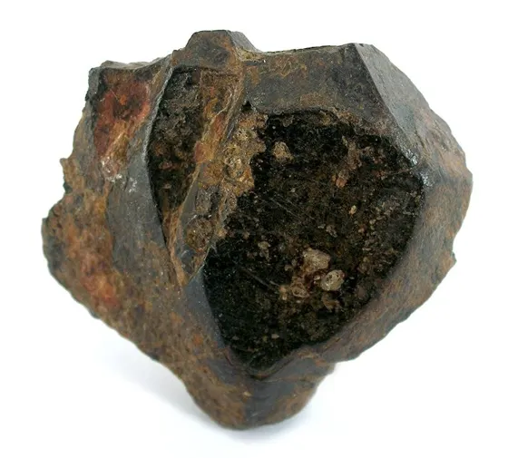

Mineral Grimoire
 Ilmenite
Ilmenite
Appearance
Opaque metallic crystal
Origin
Norway, Canada, United States, Russia
Attributes
Ilmenite is an excellent grounding stone that helps to integrate spiritual insights and mystical experiences with practical, everyday reality. It assists in bringing spiritual visions down to earth and anchoring them so that they may manifest. This is a useful stone for those who have their 'head in the clouds' as it induces a more practical approach to spirituality. Ilmenite grounds the base and earth chakras to the earth's core, allowing spiritual energy to be earthed through the body.
This stone is protective for healers and those engaged in earth healing or lightwork. It creates a barrier against negative energies whilst allowing healing energies to flow. Ilmenite also enhances the immune system and supports the body during detoxification or healing crises. It is an excellent choice for meditation groups or healing circles as it maintains the integrity of the space and the people within it.
Psychologically, Ilmenite provides stability and helps with decision-making. It is particularly helpful when you need to make practical decisions about spiritual matters or when integrating psychic insights into daily life.
Healing
Ilmenite may assist the immune system and support the body during detoxification. It is reported to help with disorders of the bones, joints and circulation.
Position
Wear, carry or place at the base chakra. Grid around healing spaces or meditation areas.